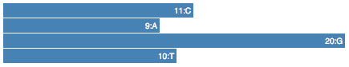

BioJS
Reuse, develop and share biological visualisation with BioJS
TASK

CAGTGCATGatACGTCAGTGCATGCTGGGGGGGGGgcatgcatgcatgCC
What does it takes to be a BioJS component?
 The component has to be published in npm.
The component has to be published in npm.  The code component has to be in github.
The code component has to be in github.  The keyword
The keyword biojsneeds to be included in the package.json
- Names:
biojs-[io/rest/vis/algo/…]-[name] - Versioning: Semver
- Documentation: Use Readme.MD in your github repo
- Packaging
- Styling
- Demostrating
- Testing
- Linting
Bootstrapping
Slush

- Help you generate new project structures
- You don’t need to use it, but it simplifies the work
- In order to install slush globally:
$ npm install -g slush $ slush -v [slush] 1.1.1 - And to install the BioJS slush:
$ npm install -g slush-biojs
Create your example project.
$ mkdir biojs-vis-example
$ cd biojs-vis-example
$ slush biojs
[slush] Using slushfile /usr/local/lib/node_modules/slush-biojs/slushfile.js
[16:53:59] Starting 'biojs:default'...
? Module name? (required) biojs-vis-example
? Description? Creating a basic example for biojs
? Module version? 0.1.0
? Author name? gsalazar
? Author email? gsalazar@ebi.ac.uk
? Github username? 4ndr01d3
? Keywords for npm (separate with comma) biojs,barchart,d3
? A visualization lib? Yes
? Unit tests: No
? Add a example css file? No
? Configure a build system? (Gulp) No
? Linting (Check code style with JSHint) No
? Choose your license type: Apache-2.0
? Is this correct? Yes
What did we get?
Available npm commands:
$ npm run build$ npm run sniper$ npm run test$ npm run watch$ npm run w
...
running: http://localhost:9090
...
Playing with the example
Keep npm run w running.
Open the example file biojs-vis-example/examples/simple.js in your favourite editor:
// if you don't specify a html file, the sniper will generate a div with id "rootDiv"
var app = require("biojs-vis-example");
var instance = new app({el: rootDiv, text: 'biojs'});Then try changing the text option and refreshing your browser.
The npm run w action, detects changes in your files, re-bundles the biojs-vis-example/build/example.js file, and exposes the result on http://localhost:9090/examples/simple
Task: Add an style file.
Create a CSS file in this path: biojs-vis-example/css/main.css
.header {
font-weight: bold;
color: green;
}
Add the following line at the end of the biojsvisexample() function, in the JavaScript file: biojs-vis-example/lib/index.js
this.el.setAttribute("class", "header");Include the style file in the npm file: biojs-vis-example/package.json
"...
sniper": {
"js": [ "/build/example.js"],
"css": [ "/css/main.css"],
"snippets": ["examples"],
"first": "simple"
},
...
This requires to restart npm run w for the sniper to consider the new file
Modules and Dependencies
Modules in Node.js
https://nodejs.org/api/modules.html
Files and modules are in one-to-one correspondence.
Export 1 object per file, assigning it to module.exports. For example the file biojs-vis-example/lib/example.js:
module.exports = " - from another module";And to import it in another file you can use the function require(). For example in the file biojs-vis-example/lib/index.js:
var example = require("./example.js");
console.log(example); // - from another moduleNext Task
Remove the functionality of displaying "Hello BioJS" and make it show "BARCHART", but the code should be in a separate module.
biojs-vis-example/lib/barchart.js:
var Barchart = function(opts) {
var container = opts.el;
container.textContent = "BARCHART";
container.setAttribute("class", "header");
}
module.exports = Barchart;
biojs-vis-example/lib/index.js:
var biojsvisexample;
var Barchart = require("./barchart.js");
module.exports = biojsvisexample = function(opts){
var bc = new Barchart(opts);
};
Dependencies in Node.js
Using npm is possible to install any module that is in the repository. For example:
$ npm i d3 --saveAnd then you can use it as a module in your files with:
var d3 = require('d3');Next Task
Refactor your code to use D3 to manipulate your DOM.
biojs-vis-example/lib/barchart.js:
var d3 = require("d3");
var Barchart = function(opts) {
var container = opts.el;
d3.select(container)
.attr("class", "header")
.text("Space for a barchart with D3!");
}
module.exports = Barchart;
Data Processing
Next Task
Given a sequence in your options, count how many times each base appears in it, and then display this values in the page.
biojs-vis-example/examples/simple.js:
var app = require("biojs-vis-example");
var instance = new app({el: rootDiv, sequence: "CAGTGCATGatACGTCAGTGCATGCTGGGGGGGGGgcatgcatgcatg"});
biojs-vis-example/lib/barchart.js:
var getBases = function(sequence) {
var s = sequence.toUpperCase();
var bases = {};
for (var i =0;i<s.length;i++){
if (typeof bases[s[i]] == "undefined")
bases[s[i]] = 1;
else
bases[s[i]]++;
}
return bases;
} // Object {C: 9, A: 9, G: 20, T: 10}
var Barchart = function(opts) {
var container = opts.el;
var bases = getBases(opts.sequence);
d3.select(container)
.attr("class", "header")
.text("Bases:")
.selectAll("p")
.data(d3.keys(bases)).enter()
.append("p")
.text(function(d){ return d +": "+bases[d]; });
}
Interested in d3?? Read about Thinking with Joins
Visualizing
https://bost.ocks.org/mike/bar/Next Task
Change the text representation for a barchart.
biojs-vis-example/lib/barchart.js:
...
var Barchart = function(opts) {
var container = opts.el,
bases = getBases(opts.sequence),
keys = d3.keys(bases),
values = keys.map(function(e){return bases[e];});
var x = d3.scale.linear()
.domain([0, d3.max(values)])
.range([0, 420]);
d3.select(container)
.attr("class", "chart")
.selectAll("div")
.data(keys)
.enter().append("div")
.style("width", function(d) { return x(bases[d]) + "px"; })
.text(function(d) { return bases[d]+":"+d; });
}
Style!
biojs-vis-example/css/main.css
.chart div {
font: 10px sans-serif;
background-color: steelblue;
text-align: right;
padding: 3px;
margin: 1px;
color: white;
}
.chart div:hover {
background-color: cadetblue;
font-size: 12px;
}
Publishing
Checklist
-
Have you put your component in GitHub?
GitHub Help -
Have you signed up in npm?
npm signup -
Have you added your npm user in this terminal?
$ npm adduser -
Does your
package.jsonfile includes the biojs tag and points to the right github repo?
Other Checking.
Then simply:
$ npm publishResult
Here is the code in this page:
<div id='snippetDiv'></div>
<script>
var rootDiv = document.getElementById('snippetDiv');
// if you don't specify a html file, the sniper will generate a div with id "rootDiv"
var app = require("biojs-vis-example");
var instance = new app({el: rootDiv, sequence: "CAGTGCATGatACGTCAGTGCATGCTGGGGGGGGGgcatgcatgcatgCC"});
</script>
And here how it looks: